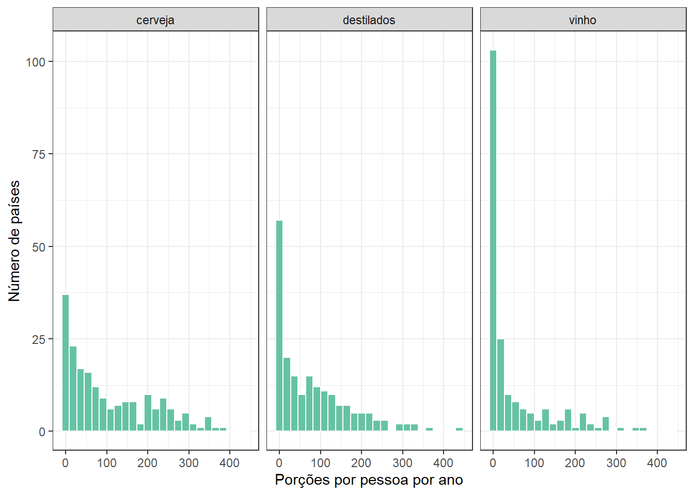
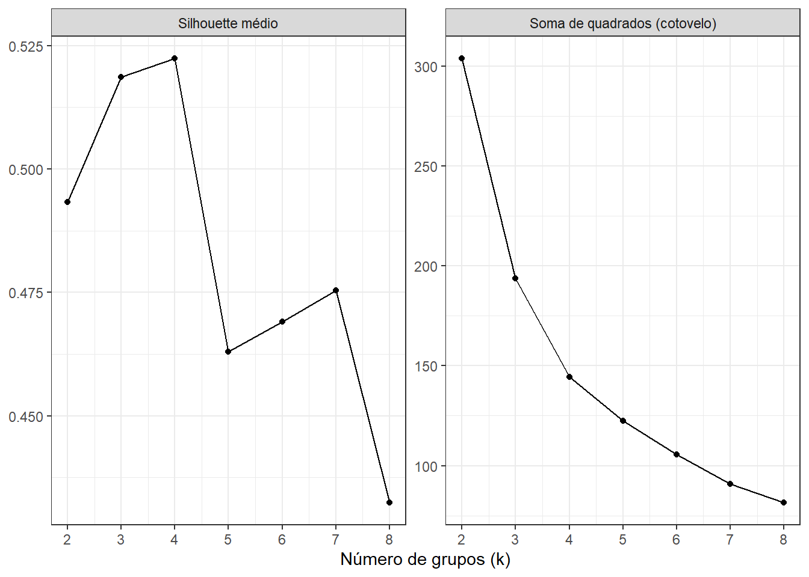
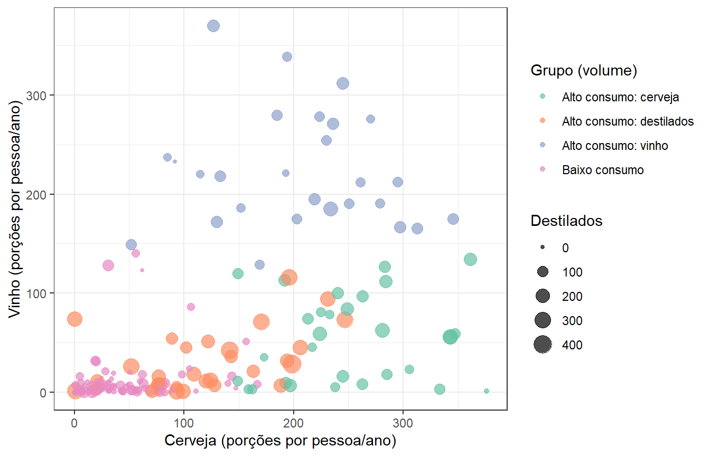
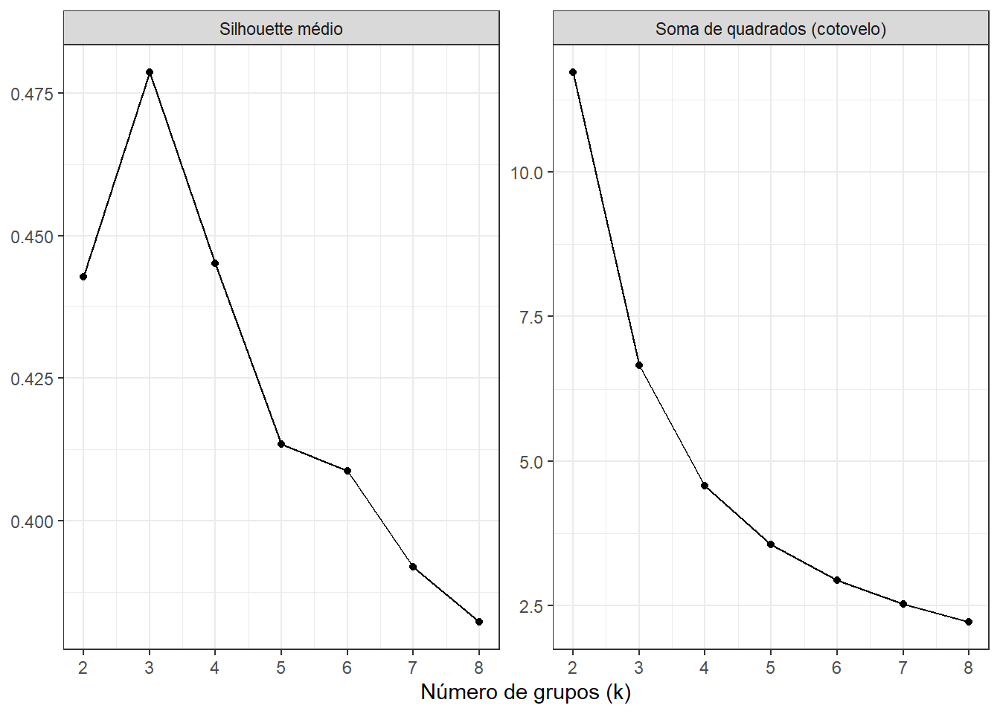
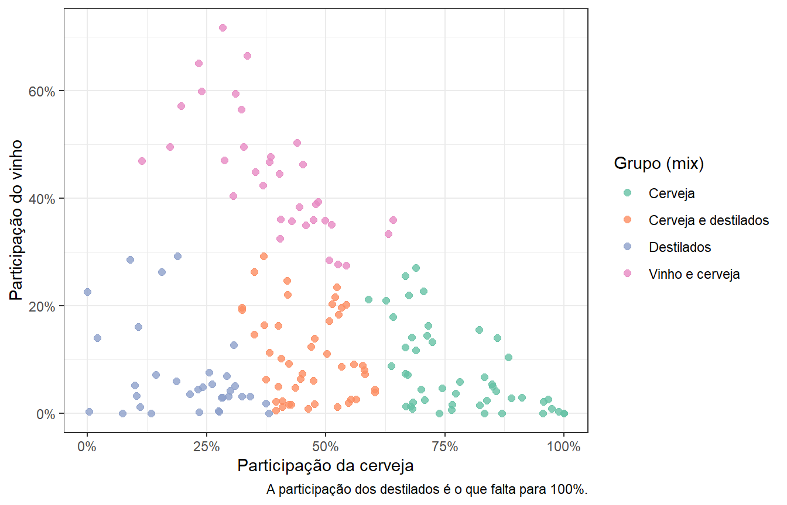
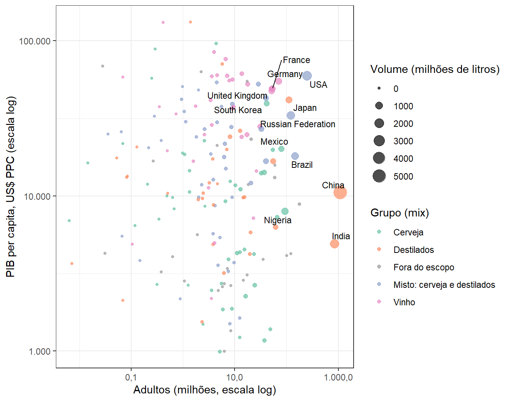
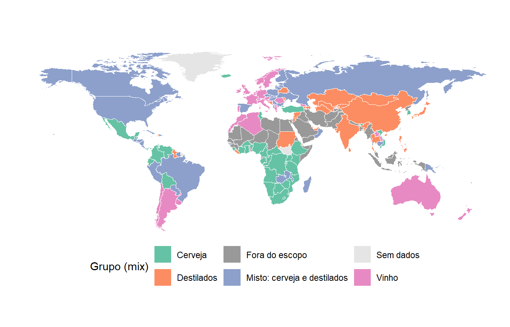

dados <- read_delim("data/drinks.csv", delim = ";", show_col_types = FALSE) |>
rename(pais = country,
cerveja = beer_servings,
destilados = spirit_servings,
vinho = wine_servings,
litros_alcool = total_litres_of_pure_alcohol) |>
mutate(litros_alcool = as.numeric(litros_alcool),
porcoes = cerveja + destilados + vinho)
bebidas <- c("cerveja", "destilados", "vinho")5 Segmentação de mercados de bebidas no mundo
Uma multinacional de bebidas atua em dezenas de países, com três linhas de produto: cerveja, vinho e destilados. Definir uma estratégia diferente para cada país é caro e difícil de coordenar, e tratar todos os países da mesma forma ignora diferenças enormes de hábito. A saída comum é organizar os países em poucos grupos de mercado, cada um com um portfólio prioritário e uma postura própria (defender, crescer, entrar ou não priorizar).
Três perguntas guiam a análise:
- Onde: em quais países o hábito de consumo de bebidas alcoólicas é mais forte?
- O quê: em cada grupo de países, qual linha de produto deve liderar?
- Quanto vale: qual é o tamanho de cada grupo de mercados, e por onde começar?
Para responder às duas primeiras, usamos o k-médias (k-means), o algoritmo de agrupamento mais usado na prática. Este capítulo apresenta a técnica em detalhes, com uma base pequena em que é possível ver o que o algoritmo faz. O capítulo seguinte aplica a mesma técnica a uma base de clientes, com mais variáveis e foco na implantação. Para a terceira pergunta, enriquecemos a base com dados externos de população e renda.
Seguimos as etapas do CRISP-DM apresentadas na introdução do livro. Todo o trabalho é feito em R.
| Etapa do CRISP-DM | Onde aparece no capítulo |
|---|---|
| Entendimento do negócio | Esta introdução: as decisões da multinacional |
| Entendimento dos dados | Dados e análise exploratória |
| Preparação dos dados | Padronização (volume), cálculo das participações (mix) e enriquecimento com dados do Banco Mundial |
| Modelagem | Como o k-médias funciona; segmentações por volume e por mix |
| Avaliação | Cotovelo, silhouette, perfil dos grupos e comparação das duas segmentações |
| Implantação | Quanto vale cada grupo, mapa e uso prático |
5.1 Dados
A base vem de uma reportagem do site FiveThirtyEight, com dados da Organização Mundial da Saúde (OMS) de 2010, e pode ser baixada neste repositório. Para cada país, ela traz:
cerveja,destiladosevinho: consumo médio anual por pessoa, em porções (uma lata de cerveja, uma dose de destilado ou uma taça de vinho);litros_alcool: consumo médio anual por pessoa, em litros de álcool puro, somando todas as bebidas.
Os valores são médias por pessoa de 15 anos ou mais.
AvisoDados e limitações
- Os dados são de um único ano (2010). Hábitos de consumo mudam devagar, mas uma decisão real exigiria dados recentes.
- O consumo é por pessoa: um país pequeno com consumo alto pode ser um mercado menor do que um país populoso com consumo moderado. Por isso, mais adiante, juntamos dados de população.
- A base não tem preço, margem, concorrência nem regulação, fatores decisivos para entrar em um mercado.
- Em vários países o consumo é quase nulo por razões culturais, religiosas ou legais. Eles são tratados como fora do escopo da estratégia, e não como uma oportunidade.
| pais | cerveja | destilados | vinho | litros_alcool | porcoes |
|---|---|---|---|---|---|
| Afghanistan | 0 | 0 | 0 | 0,0 | 0 |
| Albania | 89 | 132 | 54 | 4,9 | 275 |
| Algeria | 25 | 0 | 14 | 0,7 | 39 |
| Andorra | 245 | 138 | 312 | 12,4 | 695 |
| Angola | 217 | 57 | 45 | 5,9 | 319 |
A base tem 193 países. A coluna porcoes soma as três bebidas e será usada mais adiante.
5.2 Análise exploratória
As três bebidas têm distribuições bem assimétricas: muitos países com consumo baixo e poucos com consumo muito alto. O vinho é o caso mais extremo, com consumo próximo de zero na maior parte dos países.
dados |>
pivot_longer(all_of(bebidas), names_to = "bebida", values_to = "porcoes_ano") |>
ggplot(aes(porcoes_ano)) +
geom_histogram(bins = 25, fill = "#66c2a5", color = "white") +
facet_wrap(~ bebida) +
labs(x = "Porções por pessoa por ano", y = "Número de países")
Os cinco maiores consumidores de cada bebida:
top5 <- function(bebida) {
dados |>
slice_max(.data[[bebida]], n = 5, with_ties = FALSE) |>
transmute(!!bebida := paste0(pais, " (", .data[[bebida]], ")"))
}
tab_top5 <- bind_cols(tibble(Posição = 1:5), purrr::map(bebidas, top5))| Posição | cerveja | destilados | vinho |
|---|---|---|---|
| 1 | Namibia (376) | Grenada (438) | France (370) |
| 2 | Czech Republic (361) | Belarus (373) | Portugal (339) |
| 3 | Gabon (347) | Haiti (326) | Andorra (312) |
| 4 | Germany (346) | Russian Federation (326) | Switzerland (280) |
| 5 | Lithuania (343) | St. Lucia (315) | Denmark (278) |
E a correlação entre as variáveis:
tab_cor <- dados |>
select(all_of(bebidas), litros_alcool) |>
cor() |>
round(2) |>
as_tibble(rownames = "Variável")| Variável | cerveja | destilados | vinho | litros_alcool |
|---|---|---|---|---|
| cerveja | 1,00 | 0,46 | 0,53 | 0,84 |
| destilados | 0,46 | 1,00 | 0,19 | 0,65 |
| vinho | 0,53 | 0,19 | 1,00 | 0,67 |
| litros_alcool | 0,84 | 0,65 | 0,67 | 1,00 |
As três bebidas são positivamente correlacionadas (países que bebem mais de uma tendem a beber mais das outras), mas longe de 1: cada uma traz informação própria. Já litros_alcool é, em boa parte, uma combinação das três, e por isso não entra no agrupamento: incluí-la contaria o mesmo consumo duas vezes. Ela volta mais adiante, para medir o tamanho de cada mercado.
Por fim, 13 países têm consumo zero nas três bebidas, e 31 consomem menos de 20 porções por pessoa por ano (menos de duas por mês).
5.3 Como o k-médias funciona
O k-médias divide as observações (aqui, países) em \(k\) grupos, de forma que os países de um mesmo grupo sejam parecidos entre si e diferentes dos países dos outros grupos. O número \(k\) é escolhido por quem faz a análise.
O algoritmo é simples:
- Sorteia \(k\) pontos iniciais, os centroides, um para cada grupo.
- Atribui cada país ao centroide mais próximo (pela distância euclidiana).
- Recalcula cada centroide como a média dos países do seu grupo (daí o nome “k-médias”).
- Repete os passos 2 e 3 até que os grupos parem de mudar.
O resultado depende do sorteio inicial. Por isso, o algoritmo é rodado várias vezes com sorteios diferentes (argumento nstart) e fica com a melhor solução, a que tem a menor soma de quadrados dentro dos grupos: a soma das distâncias ao quadrado entre cada país e o centroide do seu grupo. Quanto menor essa soma, mais compactos são os grupos.
5.3.1 Por que padronizar
Como o algoritmo usa distâncias, uma variável com valores maiores ou mais espalhados pesa mais no resultado. Se uma variável estivesse em reais e outra em milhares de reais, a primeira dominaria o agrupamento apenas por causa da unidade. A padronização (subtrair a média e dividir pelo desvio padrão) coloca todas as variáveis na mesma escala.
Aqui as três bebidas estão na mesma unidade (porções), mas com dispersões diferentes. Padronizamos mesmo assim, para que cada bebida tenha o mesmo peso na definição dos grupos.
5.3.2 Como escolher \(k\)
Não existe um \(k\) “correto”. Dois critérios ajudam na escolha:
- Método do cotovelo: a soma de quadrados dentro dos grupos sempre diminui quando aumentamos \(k\) (com um grupo por país, ela seria zero). Procuramos o ponto em que a queda deixa de ser acentuada, o “cotovelo” do gráfico. É um critério subjetivo.
- Coeficiente de silhouette: para cada país, compara \(a\), a distância média aos países do próprio grupo, com \(b\), a distância média aos países do grupo vizinho mais próximo:
\[ s = \frac{b - a}{\max(a, b)}. \]
O valor vai de -1 a 1. Perto de 1, o país está bem no seu grupo; perto de 0, está na fronteira entre dois grupos; negativo, estaria melhor no grupo vizinho. A média de \(s\) entre todos os países resume a qualidade do agrupamento, e valores maiores são melhores.
A função abaixo calcula os dois critérios para vários valores de \(k\). Ela será usada nas duas segmentações.
avalia_k <- function(x, ks = 2:8) {
distancias <- dist(x)
map_dfr(ks, function(k) {
set.seed(42)
km <- kmeans(x, centers = k, nstart = 25)
tibble(k = k,
`Soma de quadrados (cotovelo)` = km$tot.withinss,
`Silhouette médio` = mean(silhouette(km$cluster, distancias)[, "sil_width"]))
})
}
grafico_k <- function(criterios) {
criterios |>
pivot_longer(-k, names_to = "criterio", values_to = "valor") |>
ggplot(aes(k, valor)) +
geom_line() +
geom_point() +
facet_wrap(~ criterio, scales = "free_y") +
scale_x_continuous(breaks = criterios$k) +
labs(x = "Número de grupos (k)", y = NULL)
}Por fim, o k-médias numera os grupos de forma arbitrária (o grupo “1” de uma execução pode ser o “3” de outra). Para que o texto não dependa dessa numeração, damos a cada grupo um nome calculado a partir do seu centroide, como o de baixo consumo ou o de maior consumo de vinho.
5.4 Segmentação 1: volume (onde o consumo é forte?)
Na primeira segmentação, agrupamos os países pelo volume consumido de cada bebida, com as três variáveis padronizadas.
x_volume <- scale(dados[bebidas])
crit_volume <- avalia_k(x_volume)
grafico_k(crit_volume)
A soma de quadrados cai bastante até \(k=4\) e mais devagar a partir daí. O silhouette médio com \(k=4\) é 0,52 (o maior valor testado é 0,52, com \(k=\) 4). Ficamos com 4 grupos: um de baixo consumo e três de consumo alto, cada um puxado por uma bebida diferente.
set.seed(42)
km_volume <- kmeans(x_volume, centers = 4, nstart = 25)
# nome de cada grupo: o de menor consumo total é o "Baixo consumo"; os demais
# recebem o nome da bebida com o maior centroide padronizado
centroides <- as_tibble(km_volume$centers) |> mutate(grupo = row_number())
total_grupo <- tapply(dados$porcoes, km_volume$cluster, mean)
nome_volume <- centroides |>
mutate(bebida = bebidas[max.col(as.matrix(centroides[bebidas]))],
nome = if_else(grupo == which.min(total_grupo), "Baixo consumo",
paste("Alto consumo:", bebida)),
nome = make.unique(nome, sep = " "))
dados <- dados |>
mutate(grupo_volume = nome_volume$nome[km_volume$cluster])A tabela mostra o consumo médio de cada bebida em cada grupo, na escala original, e três exemplos de países (os de maior consumo total no grupo).
perfil_volume <- dados |>
group_by(Grupo = grupo_volume) |>
summarise(Países = n(),
across(all_of(bebidas), ~ round(mean(.x))),
Exemplos = paste(pais[order(-porcoes)][1:3], collapse = ", ")) |>
arrange(desc(cerveja + destilados + vinho))| Grupo | Países | cerveja | destilados | vinho | Exemplos |
|---|---|---|---|---|---|
| Alto consumo: vinho | 27 | 205 | 92 | 223 | Andorra, France, Luxembourg |
| Alto consumo: cerveja | 30 | 251 | 119 | 53 | Czech Republic, Lithuania, Poland |
| Alto consumo: destilados | 31 | 117 | 230 | 30 | Grenada, Russian Federation, Slovakia |
| Baixo consumo | 105 | 36 | 24 | 10 | Montenegro, Sao Tome & Principe, Seychelles |
dados |>
ggplot(aes(cerveja, vinho, color = grupo_volume, size = destilados)) +
geom_point(alpha = 0.7) +
scale_color_brewer(palette = "Set2") +
labs(x = "Cerveja (porções por pessoa/ano)", y = "Vinho (porções por pessoa/ano)",
color = "Grupo (volume)", size = "Destilados")
O grupo de baixo consumo reúne 105 países (54% da base): são mercados em que o hábito de beber é fraco por pessoa. Os três grupos de consumo alto têm perfis bem diferentes, cada um puxado por uma bebida. Para a multinacional, esta segmentação responde onde o hábito de consumo é forte, mas não diz, por si só, o que vender em cada lugar: um país do grupo de baixo consumo pode beber quase só destilados, e outro, quase só cerveja.
5.5 Segmentação 2: mix (o que se bebe?)
Na segunda segmentação, agrupamos os países pela participação de cada bebida no consumo total, sem olhar para o volume. Um país com 600 porções por ano, metade de vinho, fica igual a um com 60 porções, metade de vinho.
Dois cuidados na preparação:
- Os 31 países com menos de 20 porções por pessoa por ano ficam de fora: com um consumo tão baixo, as participações são instáveis (um país com três porções, todas de vinho, seria “100% vinho”) e, com consumo zero, nem podem ser calculadas. Eles formam o grupo “Fora do escopo”.
- As participações não são padronizadas: elas já estão na mesma escala (de 0 a 1) e somam 1 em cada país.
dados_mix <- dados |>
filter(porcoes >= 20) |>
mutate(across(all_of(bebidas), ~ .x / porcoes, .names = "part_{.col}"))
partes <- paste0("part_", bebidas)
x_mix <- as.matrix(dados_mix[partes])
crit_mix <- avalia_k(x_mix)
grafico_k(crit_mix)
O silhouette médio com \(k=4\) é 0,45 (o maior valor testado é 0,48, com \(k=\) 3). Aqui, a escolha de \(k\) também é uma decisão de negócio: com três linhas de produto, queremos saber em quais mercados cada uma lidera e em quais nenhuma domina. Ficamos com 4 grupos.
set.seed(42)
km_mix <- kmeans(x_mix, centers = 4, nstart = 25)
# nome de cada grupo: a bebida cuja participação mais supera a média geral;
# se dois grupos disputam a mesma bebida, o mais forte fica com o nome e o
# outro vira "Misto", com as duas bebidas de maior participação
media_geral <- colMeans(x_mix)
excesso <- sweep(km_mix$centers, 2, media_geral)
dominante <- bebidas[max.col(excesso)]
forca <- apply(excesso, 1, max)
nome_mix <- ifelse(forca == ave(forca, dominante, FUN = max),
str_to_title(dominante), NA)
for (g in which(is.na(nome_mix))) {
duas <- bebidas[order(-km_mix$centers[g, ])][1:2]
nome_mix[g] <- paste("Misto:", duas[1], "e", duas[2])
}
dados_mix <- dados_mix |> mutate(grupo_mix = nome_mix[km_mix$cluster])
dados <- dados |>
left_join(select(dados_mix, pais, grupo_mix), by = "pais") |>
mutate(grupo_mix = replace_na(grupo_mix, "Fora do escopo"))
# as mesmas cores para cada grupo de mix em todos os gráficos e no mapa
cores_mix <- setNames(c(RColorBrewer::brewer.pal(4, "Set2"), "grey60", "grey90"),
c(sort(unique(dados_mix$grupo_mix)), "Fora do escopo", "Sem dados"))perfil_mix <- dados_mix |>
group_by(Grupo = grupo_mix) |>
summarise(Países = n(),
across(all_of(partes), ~ pct(mean(.x), 0)),
Exemplos = paste(pais[order(-porcoes)][1:3], collapse = ", ")) |>
rename(`% cerveja` = part_cerveja, `% destilados` = part_destilados,
`% vinho` = part_vinho)| Grupo | Países | % cerveja | % destilados | % vinho | Exemplos |
|---|---|---|---|---|---|
| Cerveja | 48 | 78% | 14% | 8% | Gabon, Venezuela, Panama |
| Destilados | 33 | 21% | 72% | 7% | Grenada, Belarus, St. Lucia |
| Misto: cerveja e destilados | 47 | 47% | 43% | 11% | Czech Republic, Russian Federation, Lithuania |
| Vinho | 34 | 39% | 16% | 44% | Andorra, France, Luxembourg |
dados_mix |>
ggplot(aes(part_cerveja, part_vinho, color = grupo_mix)) +
geom_point(size = 2, alpha = 0.8) +
scale_x_continuous(labels = scales::percent) +
scale_y_continuous(labels = scales::percent) +
scale_color_manual(values = cores_mix) +
labs(x = "Participação da cerveja", y = "Participação do vinho",
color = "Grupo (mix)",
caption = "A participação dos destilados é o que falta para 100%.")
Os grupos de mix dizem qual linha de produto lidera em cada mercado: nos países do grupo da cerveja, é ela que deve puxar o portfólio; nos do vinho, uma estratégia centrada em vinho conversa com o hábito local; e assim por diante. Nos grupos mistos, nenhuma bebida domina, e o portfólio precisa ser mais equilibrado.
5.5.1 Volume e mix: duas perguntas diferentes
A tabela abaixo cruza as duas segmentações. Cada célula é o número de países que estão naquele grupo de volume (linha) e naquele grupo de mix (coluna).
tab_cruzada <- dados |>
count(`Grupo (volume)` = grupo_volume, grupo_mix) |>
pivot_wider(names_from = grupo_mix, values_from = n, values_fill = 0)| Grupo (volume) | Cerveja | Misto: cerveja e destilados | Vinho | Destilados | Fora do escopo |
|---|---|---|---|---|---|
| Alto consumo: cerveja | 13 | 16 | 1 | 0 | 0 |
| Alto consumo: destilados | 0 | 13 | 0 | 18 | 0 |
| Alto consumo: vinho | 0 | 1 | 26 | 0 | 0 |
| Baixo consumo | 35 | 17 | 7 | 15 | 31 |
Os países de baixo consumo se espalham por 4 grupos de mix diferentes: beber pouco não diz nada sobre o que se bebe. Um exemplo é a Índia. Pelo volume, ela está no grupo “Baixo consumo”, com 123 porções por pessoa por ano; pelo mix, está no grupo “Destilados”, porque 93% do que se bebe ali são destilados. As duas leituras são verdadeiras e servem a decisões diferentes:
- o volume responde onde o hábito é forte, e ajuda a priorizar mercados;
- o mix responde o que vender, e ajuda a definir o portfólio de cada mercado.
ImportanteA escolha das variáveis é uma decisão de negócio
O mesmo algoritmo, aplicado aos mesmos dados, produziu duas segmentações diferentes, porque as variáveis foram preparadas de formas diferentes (volume padronizado ou participações). Nenhuma é “a certa”: cada uma responde a uma pergunta. Antes de rodar um agrupamento, defina qual decisão ele deve apoiar.
5.6 Enriquecimento com dados externos
Até aqui, os grupos dizem como cada país consome, por pessoa. Para saber quanto vale cada grupo, falta o tamanho dos mercados: um país com consumo moderado e 100 milhões de adultos pode valer mais do que vários países pequenos de consumo alto.
Buscar dados externos para complementar uma base é uma prática comum em projetos reais: dados públicos de população, renda, clima ou localização muitas vezes explicam mais do que as variáveis internas. Aqui, usamos os indicadores do Banco Mundial para 2010, o mesmo ano dos dados da OMS:
- população de 15 anos ou mais, a mesma base do consumo por pessoa da OMS;
- PIB per capita em paridade de poder de compra (PPC), em dólares internacionais constantes, uma medida de renda comparável entre países;
- região e faixa de renda de cada país.
Os dados foram baixados da API do Banco Mundial pelo script scripts/baixa_dados_banco_mundial.py e gravados em data/banco_mundial_2010.csv.
NotaVariáveis ativas e variáveis descritivas
População e renda não entram no agrupamento. Se a população entrasse, China e Índia formariam um grupo só por serem grandes, mesmo com hábitos diferentes; com a renda, os grupos passariam a separar países ricos e pobres, algo que já sabemos sem modelo. Em segmentação, é comum distinguir as variáveis ativas, que formam os grupos (aqui, o consumo), das variáveis descritivas, que os caracterizam depois (aqui, população e renda).
banco_mundial <- read_csv("data/banco_mundial_2010.csv", show_col_types = FALSE)5.6.1 Cruzando as bases: o problema dos nomes
Para juntar as duas bases, precisamos de uma chave comum. O Banco Mundial identifica cada país pelo código ISO de três letras (BRA, FRA), mas a base da OMS traz só o nome do país, em inglês e com grafias próprias (“Bosnia-Herzegovina”, “Antigua & Barbuda”). Cruzar pelo nome falharia em muitos casos.
O pacote countrycode converte nomes de países, escritos de várias formas, em códigos padronizados:
dados <- dados |>
mutate(iso3 = countrycode(pais, origin = "country.name", destination = "iso3c",
warn = FALSE))
sem_codigo <- dados |> filter(is.na(iso3)) |> pull(pais)Países sem código ISO identificado: Micronesia. Em seguida, juntamos as bases pelo código e verificamos quantos países ficaram sem dados do Banco Mundial:
dados <- dados |>
left_join(banco_mundial, by = "iso3")
sem_populacao <- dados |> filter(is.na(populacao_15mais)) |> pull(pais)
sem_pib <- dados |> filter(!is.na(populacao_15mais), is.na(pib_per_capita_ppc)) |> pull(pais)- Sem população (o país não está na base do Banco Mundial): Cook Islands, Micronesia, Niue.
- Com população, mas sem PIB per capita: Cuba, North Korea, Djibouti, Eritrea, Monaco, Venezuela, Yemen.
Faltas como essas são normais ao cruzar bases de fontes diferentes: territórios que não são membros do Banco Mundial ou países sem estatísticas confiáveis no período. O importante é verificar e registrar o que não casou, e não descobrir o problema depois, em um total que não fecha. Nas contas a seguir, esses países ficam de fora dos totais.
5.7 Quanto vale cada grupo
Com a população, calculamos o tamanho de cada mercado em litros de álcool puro por ano:
\[ \text{volume do mercado} = \text{litros de álcool puro por pessoa} \times \text{população de 15 anos ou mais}. \]
dados <- dados |>
mutate(volume_mercado = litros_alcool * populacao_15mais)
valor_grupo <- function(grupo) {
dados |>
filter(!is.na(volume_mercado)) |>
group_by(Grupo = .data[[grupo]]) |>
summarise(Países = n(),
`Adultos (milhões)` = round(sum(populacao_15mais) / 1e6),
`Volume (milhões de litros)` = round(sum(volume_mercado) / 1e6),
`PIB per capita mediano (US$ PPC)` = round(median(pib_per_capita_ppc, na.rm = TRUE))) |>
mutate(`% do volume mundial` = pct(`Volume (milhões de litros)` /
sum(`Volume (milhões de litros)`))) |>
arrange(desc(`Volume (milhões de litros)`))
}Pelo volume (onde):
| Grupo | Países | Adultos (milhões) | Volume (milhões de litros) | PIB per capita mediano (US$ PPC) | % do volume mundial |
|---|---|---|---|---|---|
| Alto consumo: destilados | 29 | 1.564 | 9.215 | 16.772 | 39,1% |
| Alto consumo: cerveja | 30 | 736 | 5.769 | 20.058 | 24,5% |
| Baixo consumo | 104 | 2.347 | 4.644 | 5.396 | 19,7% |
| Alto consumo: vinho | 27 | 405 | 3.951 | 49.130 | 16,8% |
Pelo mix (o que):
| Grupo | Países | Adultos (milhões) | Volume (milhões de litros) | PIB per capita mediano (US$ PPC) | % do volume mundial |
|---|---|---|---|---|---|
| Destilados | 32 | 2.313 | 9.229 | 10.439 | 39,1% |
| Misto: cerveja e destilados | 45 | 825 | 6.864 | 21.094 | 29,1% |
| Vinho | 34 | 456 | 3.925 | 37.815 | 16,6% |
| Cerveja | 48 | 722 | 3.494 | 8.246 | 14,8% |
| Fora do escopo | 31 | 735 | 66 | 4.125 | 0,3% |
A primeira tabela traz uma informação que a segmentação sozinha escondia. O grupo de baixo consumo reúne 46% da população adulta dos países com dados e responde por 20% do volume total de álcool. O maior mercado do grupo, India, consome sozinho cerca de 1.878 milhões de litros de álcool puro por ano, mais do que muitos países de consumo alto. Consumo baixo por pessoa não significa, necessariamente, mercado pequeno. Por outro lado, um hábito fraco por pessoa indica um crescimento mais lento e mais caro.
O gráfico abaixo mostra cada país pela população adulta e pela renda, com o tamanho do ponto proporcional ao volume do mercado e a cor indicando o grupo de mix. Os 12 maiores mercados estão identificados.
maiores <- dados |> slice_max(volume_mercado, n = 12)
dados |>
filter(!is.na(volume_mercado), !is.na(pib_per_capita_ppc)) |>
ggplot(aes(populacao_15mais / 1e6, pib_per_capita_ppc)) +
geom_point(aes(size = volume_mercado / 1e6, color = grupo_mix), alpha = 0.7) +
geom_text_repel(data = filter(maiores, !is.na(pib_per_capita_ppc)),
aes(label = pais), size = 3, max.overlaps = Inf) +
scale_x_log10(labels = scales::label_number(big.mark = ".", decimal.mark = ",")) +
scale_y_log10(labels = scales::label_number(big.mark = ".", decimal.mark = ",")) +
scale_color_manual(values = cores_mix) +
labs(x = "Adultos (milhões, escala log)", y = "PIB per capita, US$ PPC (escala log)",
color = "Grupo (mix)", size = "Volume (milhões de litros)")
Esse gráfico ajuda a priorizar dentro de cada grupo: países grandes e de renda alta (no alto, à direita) combinam volume e potencial para produtos premium; países grandes e de renda baixa têm volume, mas pedem produtos de preço acessível.
A tabela a seguir lista os 10 maiores mercados e os dois grupos de cada um: o de volume indica a força do hábito, e o de mix indica com qual linha de produto entrar.
tab_maiores <- dados |>
slice_max(volume_mercado, n = 10) |>
transmute(País = pais,
`Volume (milhões de litros)` = round(volume_mercado / 1e6),
`PIB per capita (US$ PPC)` = pib_per_capita_ppc,
`Grupo (volume)` = grupo_volume,
`Grupo (mix)` = grupo_mix)| País | Volume (milhões de litros) | PIB per capita (US$ PPC) | Grupo (volume) | Grupo (mix) |
|---|---|---|---|---|
| China | 5.453 | 10.476 | Alto consumo: destilados | Destilados |
| USA | 2.161 | 59.797 | Alto consumo: cerveja | Misto: cerveja e destilados |
| India | 1.878 | 4.914 | Baixo consumo | Destilados |
| Russian Federation | 1.394 | 33.064 | Alto consumo: destilados | Misto: cerveja e destilados |
| Brazil | 1.050 | 18.062 | Alto consumo: cerveja | Misto: cerveja e destilados |
| Nigeria | 843 | 7.963 | Baixo consumo | Cerveja |
| Germany | 798 | 54.826 | Alto consumo: vinho | Vinho |
| Japan | 777 | 41.647 | Alto consumo: destilados | Destilados |
| France | 625 | 49.130 | Alto consumo: vinho | Vinho |
| United Kingdom | 537 | 47.683 | Alto consumo: vinho | Vinho |
5.8 Os grupos de mix no mapa
O mapa mostra a segmentação por mix, a que orienta o portfólio. Para pintar cada país, cruzamos de novo pelo código ISO, agora com os nomes usados pelo pacote maps.
mapa <- map_data("world") |>
mutate(iso3 = countrycode(region, origin = "country.name", destination = "iso3c",
warn = FALSE)) |>
left_join(select(dados, iso3, grupo_mix), by = "iso3") |>
mutate(grupo_mix = replace_na(grupo_mix, "Sem dados"))
ggplot(mapa, aes(long, lat, group = group, fill = grupo_mix)) +
geom_polygon(color = "white", linewidth = 0.1) +
scale_fill_manual(values = cores_mix) +
coord_quickmap(ylim = c(-55, 85)) +
labs(fill = "Grupo (mix)") +
theme_void() +
theme(legend.position = "bottom")
A geografia aparece com clareza, embora o algoritmo não tenha recebido nenhuma informação sobre localização: países vizinhos e de culturas próximas tendem a ter o mesmo mix. Esse é um bom sinal de que os grupos capturam algo real, e não apenas ruído dos dados.
5.9 Uso prático
Para que serve. As duas segmentações organizam a estratégia internacional em poucos blocos. O mix define a linha de produto que lidera o portfólio em cada grupo de mercados (e, com isso, campanhas, distribuição e lançamentos). O volume, combinado com a população e a renda, ajuda a decidir onde priorizar investimentos e com que posicionamento de preço.
Para que não serve. Os grupos não substituem o estudo de cada país antes de uma decisão de entrada: regulação, impostos, concorrência e canais de distribuição podem inviabilizar um mercado que parece atraente na segmentação. E os países “Fora do escopo” não são uma oportunidade de expansão: em muitos deles, o consumo é baixo por razões culturais, religiosas ou legais que devem ser respeitadas.
Como usar. Uma forma prática é montar uma matriz com o grupo de mix nas linhas e a prioridade (definida pelo volume do mercado e pela renda) nas colunas, e atribuir a cada célula uma postura: defender a liderança, crescer, entrar ou não priorizar.
Manutenção.
- Refazer as segmentações sempre que houver dados novos de consumo: hábitos mudam devagar, mas mudam (o vinho, por exemplo, ganhou espaço em vários países fora da Europa).
- Atualizar a população e a renda, que mudam mais rápido que o consumo.
- Acompanhar os países que mudam de grupo entre uma atualização e outra: eles são os mercados em transformação.
5.10 Conclusão
Neste capítulo, usamos o k-médias para segmentar 193 países de duas formas: pelo volume de consumo de cada bebida, que mostra onde o hábito é forte, e pelo mix de bebidas, que mostra o que se bebe em cada lugar. As duas segmentações, feitas com o mesmo algoritmo e os mesmos dados, apontam direções diferentes, e juntas orientam a estratégia: o mix escolhe a linha de produto, e o volume, a prioridade. O enriquecimento com dados do Banco Mundial completou o quadro com o tamanho de cada mercado, mostrando que um consumo baixo por pessoa pode esconder um mercado grande.
Limitações:
- Os dados de consumo são de um único ano (2010) e não distinguem marcas, preço ou qualidade.
- As porções por bebida podem não captar bem o consumo de bebidas produzidas e vendidas de forma informal, que é relevante em vários países.
- A base não tem informações de regulação, impostos, concorrência ou margem, decisivas para a estratégia.
- Alguns países ficaram sem dados do Banco Mundial e não entram nos totais.
- O k-médias assume grupos aproximadamente esféricos, e a escolha de \(k\) combina critérios estatísticos com o objetivo do negócio.
Próximos passos: atualizar os dados de consumo com uma base mais recente da OMS; incluir a evolução do consumo ao longo do tempo, para separar mercados em crescimento e em queda; acrescentar dados de preço, impostos e participação de mercado da empresa; e testar a estabilidade dos grupos com outras sementes e valores de \(k\).